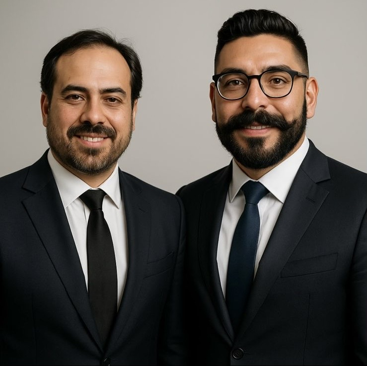

🏗️ De la Obra al Dato
Cómo la IA está Automatizando el Control de Proyectos
👨💼 Ing. Oscar Zacaula • 👨💻 Ing. Joel Dávila
Somos Digiall 🤝
Su Socio en Soluciones Tecnológicas Integrales
💻
Software
📹
Seguridad
🌐
Infraestructura
🛠️
Soporte TI
👥 NUESTRO EQUIPO
👨💻 Ing. Joel Dávila
👨💼 Ing. Oscar Zacaula

🏗️ Filosofía del equipo: "Todo ingeniero civil debería enfocarse en construir, no en llenar formatos"
📈 Brevísima Historia de la IA
🧮 Primeras Máquinas
Cálculo de estructuras automático
🧠 Machine Learning
Predicción de comportamientos
🔥 Deep Learning
Reconocimiento de patrones complejos
💬 LLMs
Era actual: IA conversacional
🔄 LENGUAJE A TOKEN - TOKEN A LENGUAJE
Palabras → Tokens

Tokens → Vectores

🪟 VENTANA DE CONTEXTO

📝 PROMPT

🤖 LLM - Modelos de Lenguaje
| Modelo | Empresa | Mejor conocido | |
|---|---|---|---|
|
|
GPT-4 | OpenAI | El primero en llegar |
|
|
Claude | Anthropic | Usado para programar y escribir |
|
|
Gemini | La mayor ventana de contexto | |
|
|
Llama | Meta | Modelo open source |
|
|
Grok | xAI | Más inteligente y criticado por su comportamiento |
|
|
DeepSeek | DeepSeek | Modelo desarrollado por China |
⚡ Niveles de Interacción con los LLMs
🔄 Diagrama de Niveles de Interacción
Aquí irán las imágenes de:
- 💬 Chat: Consultas rápidas desde el celular en obra
- 🛠️ Studio/IDE: Prototipos de reportes personalizados
- 🤖 API: Automatización completa de flujos de trabajo
🏗️ Evolución del ingeniero civil:
📱 Nivel 1: "¿Cómo calculo el volumen de concreto para esta losa?"
🖥️ Nivel 2: Subir archivos CAD y generar reportes personalizados
⚙️ Nivel 3: Sistema automático que procesa notas de voz → bitácora → reporte ejecutivo
📱 Nivel 1: "¿Cómo calculo el volumen de concreto para esta losa?"
🖥️ Nivel 2: Subir archivos CAD y generar reportes personalizados
⚙️ Nivel 3: Sistema automático que procesa notas de voz → bitácora → reporte ejecutivo
🤖 Agentes
- 🧠 Definición: IA que actúa como un asistente especializado en construcción que toma decisiones autónomas
- ⚡ Capacidades: Clasificar notas de obra, calcular costos, actualizar cronogramas, generar alertas
- 🏗️ Aplicaciones en obra: Supervisor virtual de bitácoras, controlador automático de gastos, generador de reportes ejecutivos
💡 Ejemplo práctico: Un agente puede recibir tu audio "Llegaron 5 toneladas de varilla", automáticamente actualizar inventario, verificar contra el presupuesto, y si hay desviación, enviar alerta al director de proyecto.
🤖 Diagrama de Agentes
Aquí irá la imagen explicativa de cómo funcionan los agentes en obra
🛠️ Taller
🏗️ Práctica: De la Obra al Dato
Automatizaremos el flujo completo de información de obra
🎯 Objetivo: Crear un sistema donde el ingeniero residente solo graba audios y automáticamente se generan:
- 📋 Bitácora digital actualizada
- 💰 Control de gastos en tiempo real
- 📊 Reportes ejecutivos para el cliente
⚡ Tecnologías que usaremos: Telegram (captura) → n8n (automatización) → Google Sheets (datos) → AI Studio (reportes)
🎯 Fin
🏗️ ¡Gracias, colegas ingenieros!
¿Preguntas sobre automatización en construcción?
🚀 Digiall
🌐 www.digiall.mx
📞 55 4440 5487
📧 Consultas gratuitas para implementación en obras
💡 Próximos pasos: Si quieren implementar este sistema en su constructora, podemos hacer una consultoría gratuita para evaluar sus procesos actuales y diseñar la automatización específica.